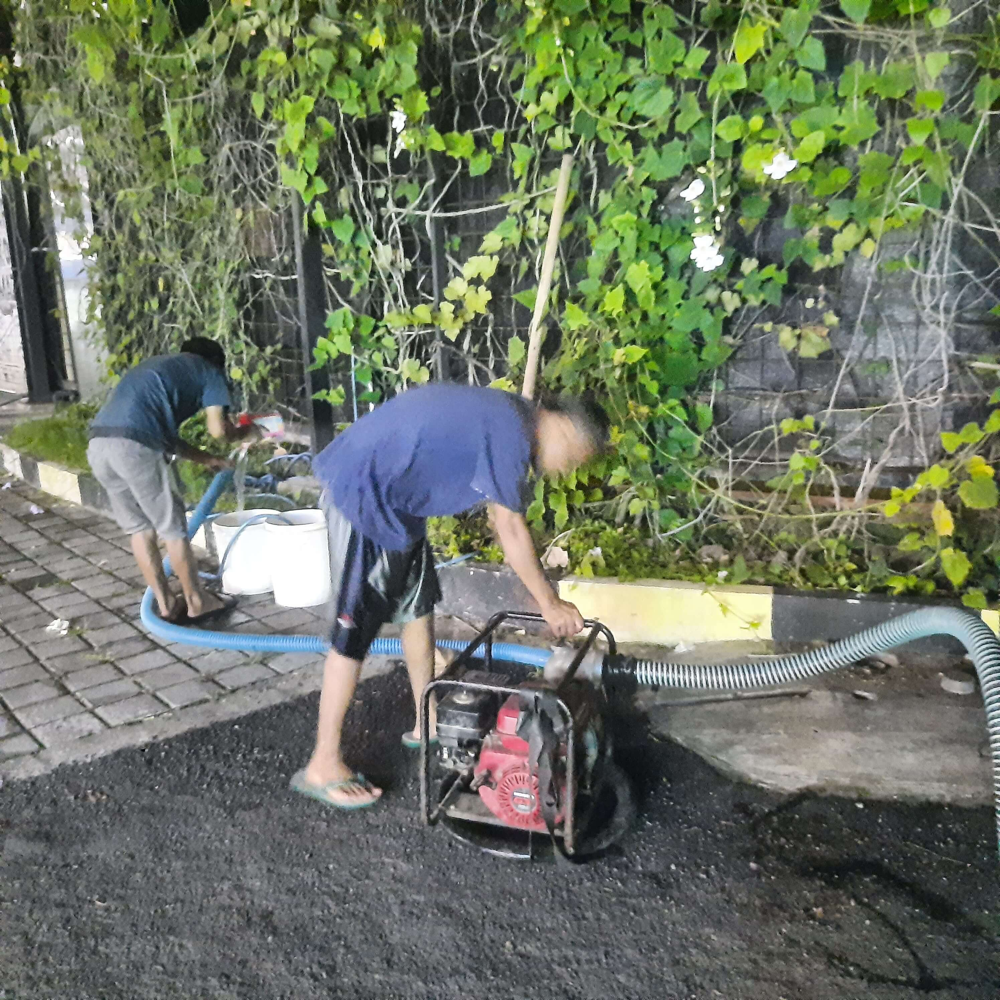
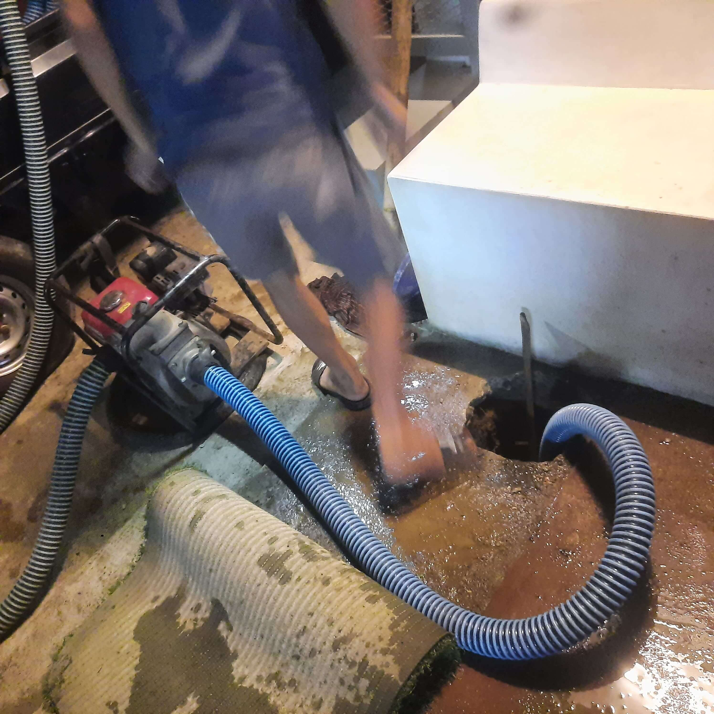
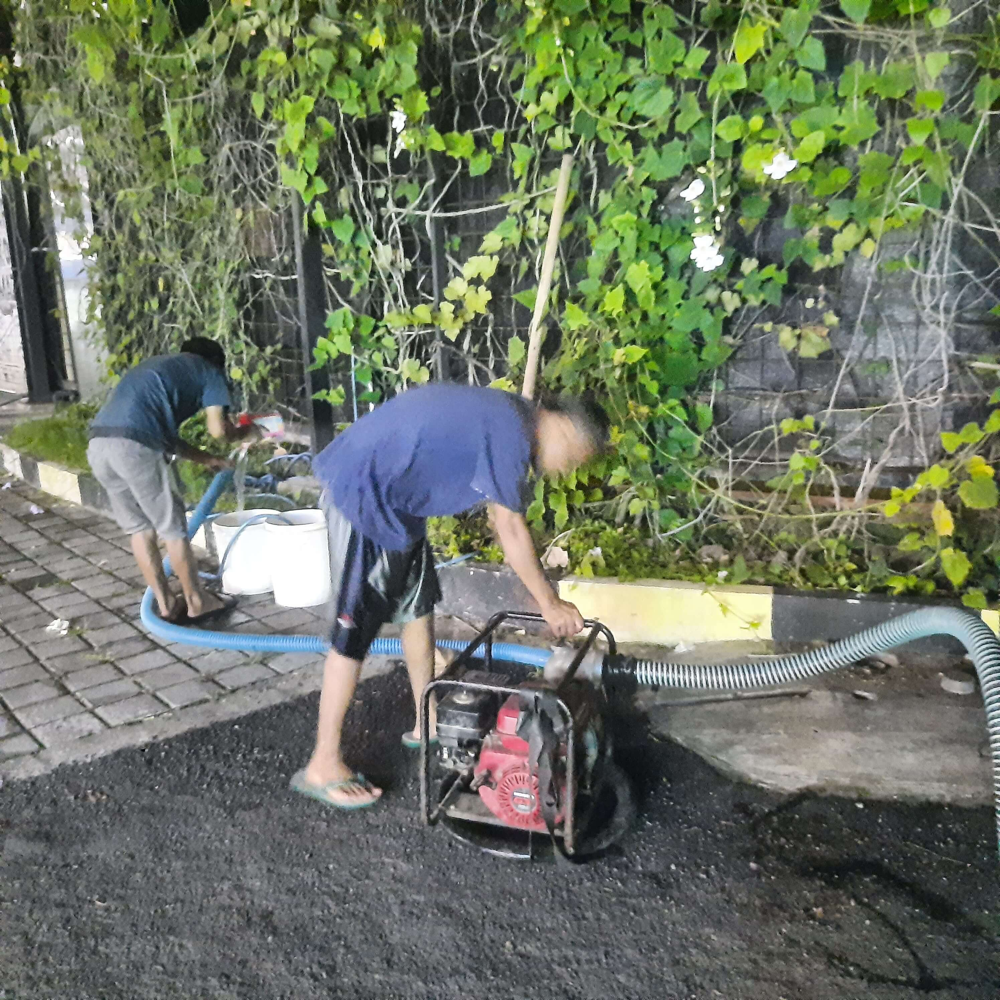
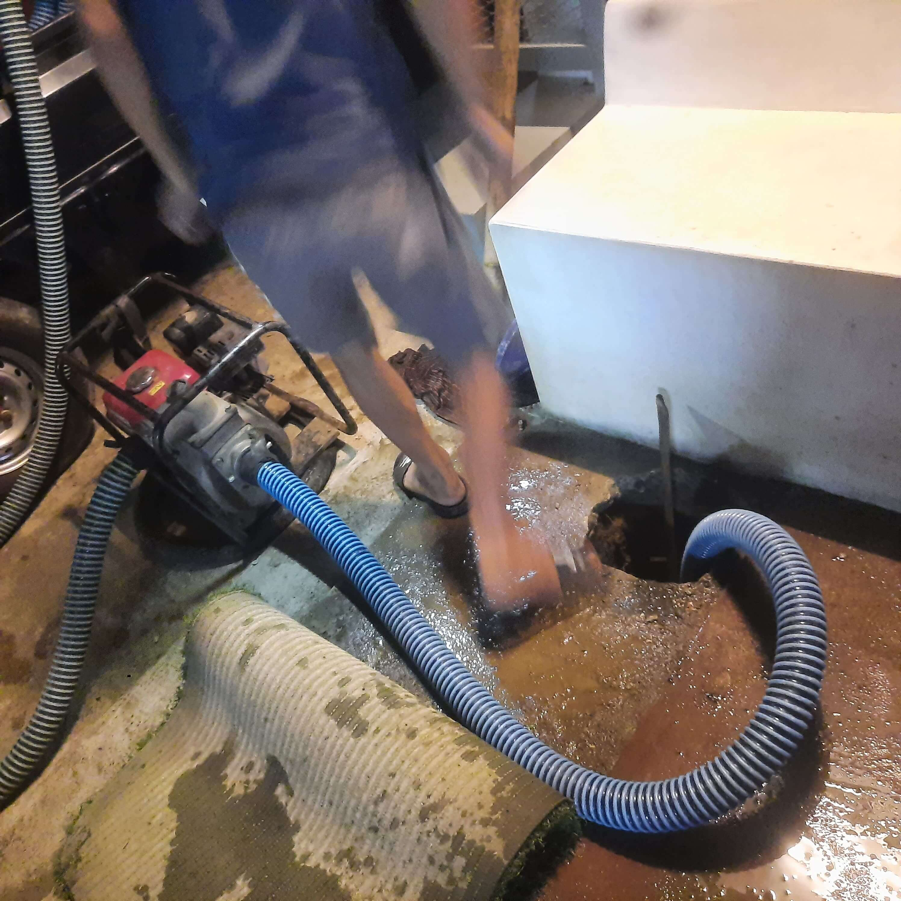
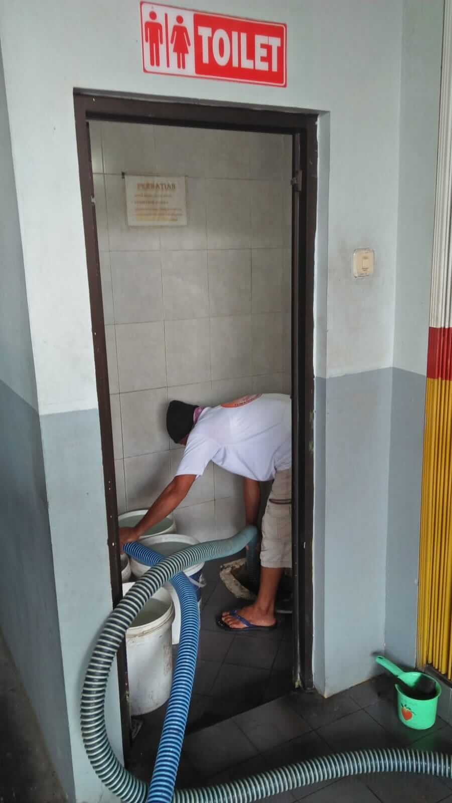
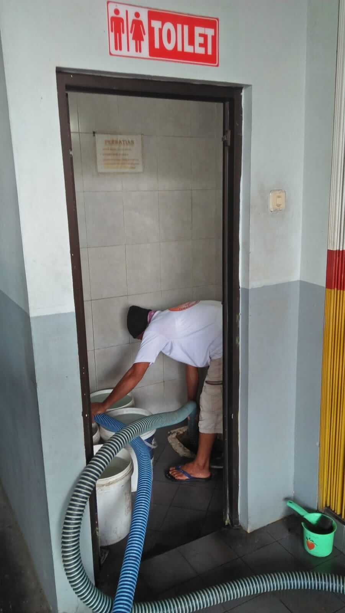
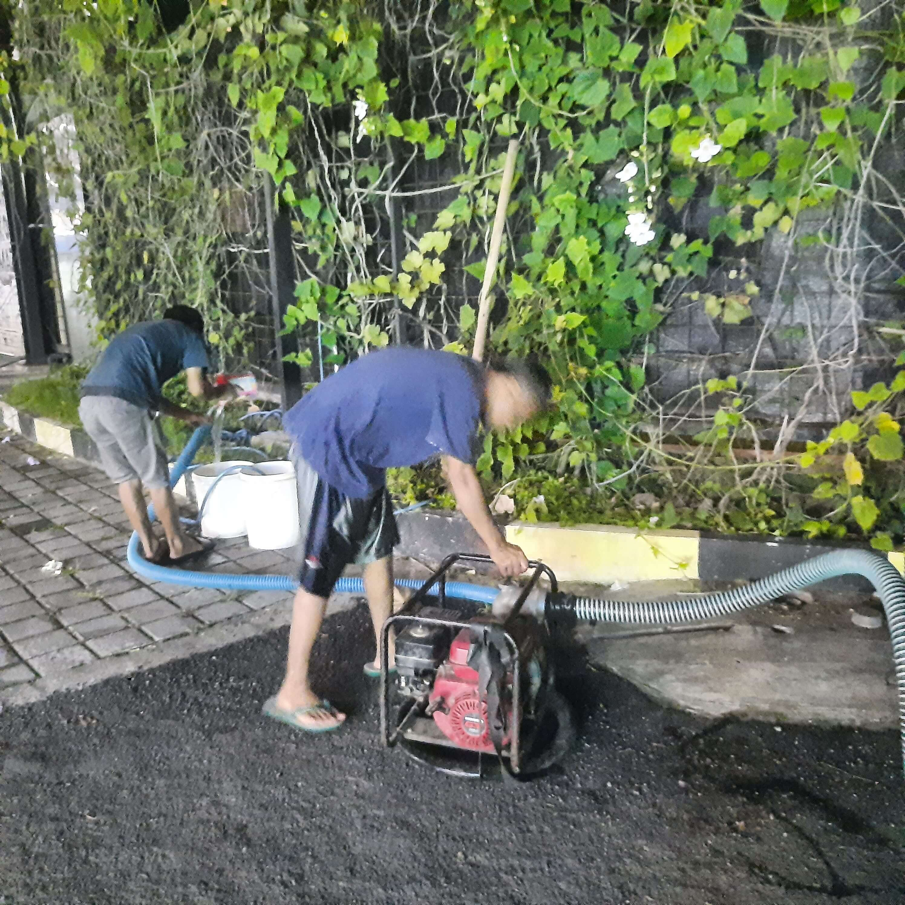
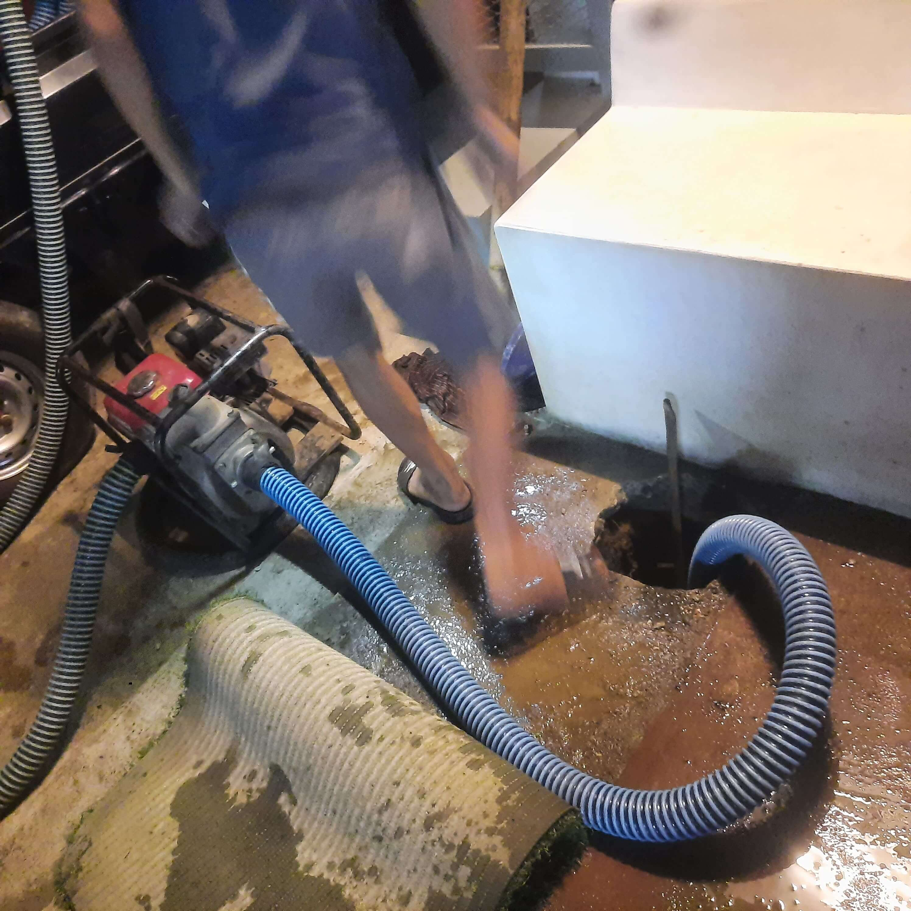
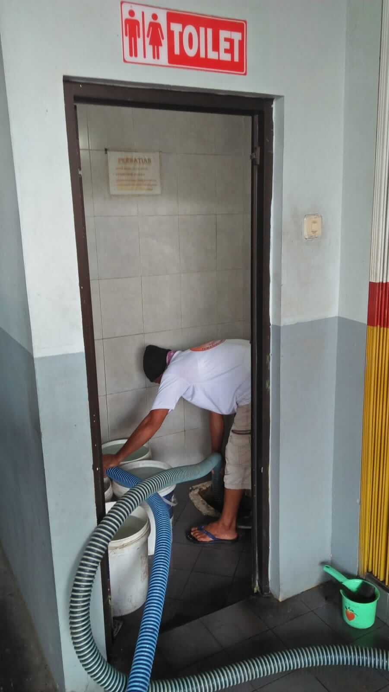

Galeri Kegiatan
Dokumentasi pelayanan sedot WC oleh tim profesional Top Resik
 



 


Layanan cepat, bersih dan tuntas – Harga transparan dan bergaransi
Dokumentasi pelayanan sedot WC oleh tim profesional Top Resik


